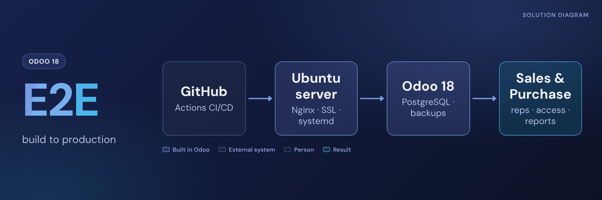

Odoo 18SalesPurchaseSecurityDevOpsGitHub Actions
Prime Global Imports — Odoo 18 ERP
Independent end-to-end Odoo 18 ERP delivery from business modules through production infrastructure
About this project
Led this independent July–December 2025 Odoo 18 project alongside full-time employment. Owned Sales, Purchase, user/access management, sales-representative management, reporting/UI customization and the production infrastructure and deployment pipeline.
Key deliverables
- End-to-end ownership of development, deployment and production operations
- Sales, Purchase, user/access and sales-representative management
- Ubuntu/Linux, PostgreSQL, Nginx, SSL/Certbot, systemd, backups and domain configuration
- GitHub Actions CI/CD